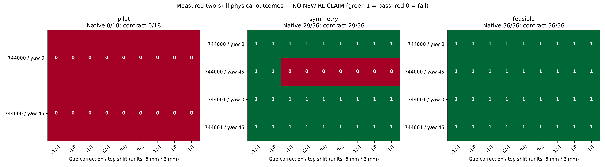

90 actual physics episodes /22,500 control steps /0 optimizer updates. Only2 new physical initial scenes. All results offline; independent RL gain UNVERIFIED.
| Controller | Native and yaw-contract success | Interpretation |
|---|---|---|
| Single orientation, pilot (one scene) | 0/18 | Preplace planning failures |
| Nearest symmetric orientation (two scenes) | 29/36 | 7 preplace failures; best measured fixed4/4 contexts |
| Feasible symmetric orientation (same two scenes) | 36/36 | 7 rescues,0 regressions; exact support prefixes36/36 |

Four task contexts are two scenes ×two requested yaw contracts, not four independent scenes. Under the strongest tested controller, all nine parameter pairs succeed in every context. This is a local negative for learning opportunity, not a universal impossibility result.
Research decision · Raw-derived metrics · Open synchronized video and curves · RAW · Annotated · Mechanism figure